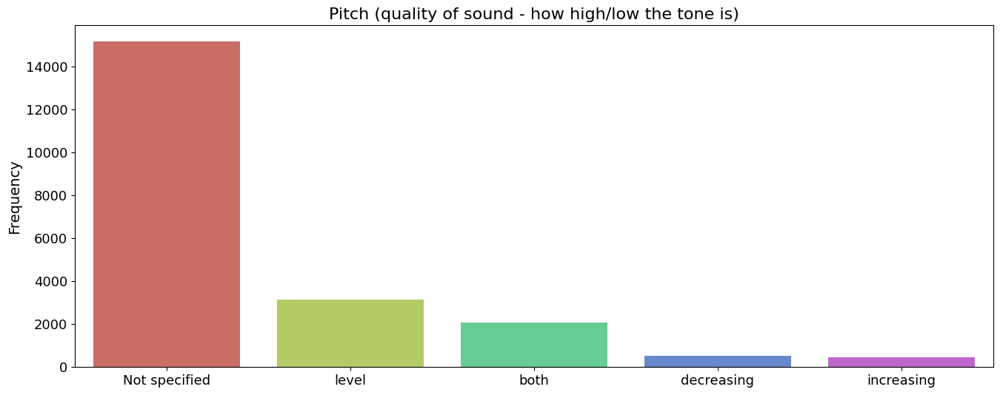

-
Audio Files Registration per Year
Visualizes the yearly distribution of audio file registrations, unveiling trends and patterns in data collection over time.
-
Audio Files Registration per Month
Illustrates the distribution of audio file registrations across different months, aiding in the detection of seasonal trends in data collection patterns.
-
Pitch Distribution
Provides insights into the variety and spread of pitch values within the dataset, offering a glimpse into the acoustic characteristics of the recordings.
 -
Top 15 Elevation Types
Highlights the most prevalent elevation types within the dataset, shedding light on habitat characteristics and their distribution.
-
Recordings Duration
Reveals the distribution of audio recording durations, providing insights into the length of audio clips present in the dataset.
-
Sampling Rate Distribution
Showcases the distribution of sampling rates, offering insights into the quality and characteristics of audio recordings in the dataset.
-
Country Distribution
Displays the geographical representation of recordings across different countries within the dataset, providing insights into global coverage.
-
Recordist Distribution
Offers insights into recording distribution by various recordists, indicating levels of engagement and contribution within the dataset.
Exploratory Data Analysis (EDA)